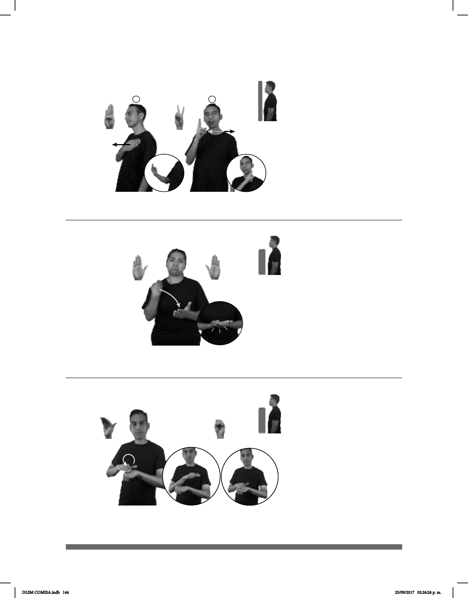

144
Seña: SB
MD B-P.8, MB S.1
MD y MB palmas
hacia abajo.
A la altura del pecho.
MD sobre MB.
La MD se mueve
formando un círculo y después
golpea la MB.
1. sust. f. Nota o juicio
que expresa el aprendizaje y buen
cumplimiento de un alumno en una
materia. 2. adj. De calidad muy
destacatada.
(B-P 102)
1
2
pos-MI HIJO EXCELENTE ESCUELA
allá
Mi hijo es excelente en la escuela.
(B-P 100)
ARGENTINA
allá
CAPITAL BUENOS-AIRES
La capital de Argentina es Buenos Aires.
Seña: SC: I. y II. SM
I. B-P.1; II. 2.1
I. Palma hacia
adentro; II. Palma hacia la
izquierda.
I. Sobre el pecho; II. A
la altura del rostro del lado derecho
al izquierdo.
I. Recto hacia
enfrente; II. Recto.
II. Labios
soplando.
Capital de la República
de Argentina.
Seña: SB
MD y MB B-P.2
MD la palma inicia hacia
abajo y termina hacia arriba. MB palma
hacia
arriba.
MD y MB a la altura del pecho.
El antebrazo de MD gira y
cambia la orientación de la mano, después
MD golpea MB.
Labios protruídos.
v. intr. Perder un cuerpo el
equilibrio hasta dar contra el suelo u otra
cosa. Descender de un nivel o valor a otro
inferior.
(B-P 101) Caer
pos-MI HERMANO BICICLETA pro-ÉL CAER
Mi hermano se cayó de la bicicleta.
DLSM COMISA.indb 144 25/09/2017 02:26:26 p. m.